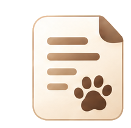

常見問題
開始之前，
你可能想先知道這些。
關於記錄、分享與資料管理，你可能會想知道的事。
開始使用
一定要下載新的 App 嗎？
不用。日常記錄主要在 LINE 官方帳號裡完成；需要補登、進階修改或查看月曆時，再從 LINE 開啟管家後台。
可以怎麼記錄？
可直接輸入「乾乾5」、「喝水30」、「嘔吐 白沫」等文字，也可以從圖文選單的「記一筆」開始。送出後請確認系統整理的項目、時間與數量。

紀錄與資料記錯了可以修改嗎？
可以。可用 LINE 快捷操作修改或刪除最近紀錄，也能在管家後台編輯任一筆資料；修改後當日摘要會重新整理。
後台連結過期，資料會不見嗎？
不會。回到 LINE 輸入「管家後台」取得新的專屬連結即可；既有照護資料不會因連結過期而消失。
需要自己保存一份資料嗎？
可以在管家後台匯出資料；單隻貓咪可下載 CSV，帳戶資料可下載 JSON。
資料會自動分享給別人嗎？
不會。邀請家人朋友一起照顧或分享摘要，都需要由你主動選擇。專屬後台連結與分享連結也不應轉傳給不相關的人。
與家人朋友照顧貓貓
可以邀請家人或朋友一起照顧嗎？
Beta 期間可免費體驗共同照顧。正式方案開放後，共同照顧將列為安心 Plus 付費權益；正式開放時間與權益內容將另行公告。
摘要可以直接當成醫師診斷嗎？
不可以。摘要只整理你已輸入的資料。分享給獸醫師前，請先確認貓咪、日期、時間、數量與備註；疾病、用藥與緊急程度仍應由獸醫判斷。
喵喵管家怎麼收費？
目前 Beta 期間，日常照護記錄與共同照顧可免費體驗。正式方案規劃為安心 Plus NT$149／月／家庭，共同照顧將列為付費權益；Plus 尚未開放，正式權益與開放時間將另行公告。